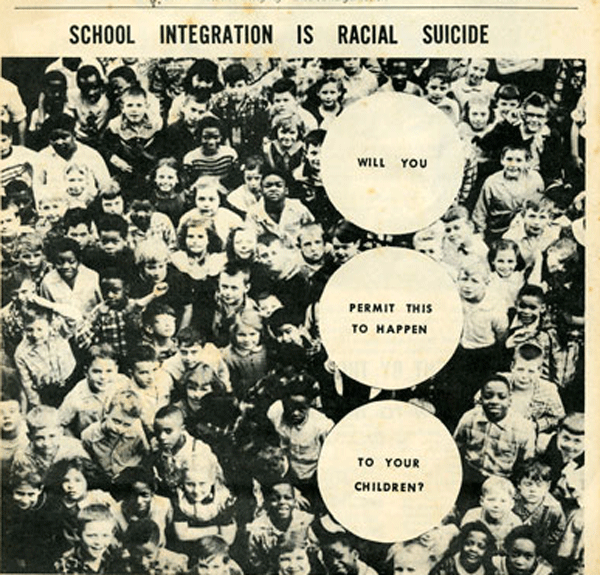

-
Strange Fruit: Civil Rights and Visual Culture at ICP
by Laila Pedro June 30, 2010
Gerry Biggs, MALCOLM X born: May 19, 1925/HO CHI MINH born: May 19, 1890, 1976 via For All The World To See
For the past two weeks, the world’s attention (or, more precisely, the attention of the world’s television sets) has been riveted on South Africa, host country of the World Cup. Stadiums in Praetoria, Johannesburg, Bloemfontein, and Cape Town gather hundreds of thousands of cheering fans in a spectacle of friendly internationalism. The ESPN clips of locals huddled around the set in the town(ship) pub are meant to warm us with soccer’s unrivaled unifying power. There’s something grotesque, though, in all this taking place where economic injustice along racial fault lines has barely improved since the end of apartheid. Some black townships still lack basic sanitation, and the hope poured into the ANC is a distant memory, even with the presidency held by a former cellmate of Nelson Mandela’s. Under an international spotlight, South Africa has been transformed, mediated via the beatifying power of the World Cup into some kind of postracial myth, a metamorphosis that speaks to the persistant, transsubstantiating power of the mass media. But the rumblings are always there, spreading in ripples from the epicenter of the pitch. So the French press attributes their spectacular flameout to the player’s being “thugs from the banlieue,” lacking the proper pride and French nationalism.
From the example of South Africa, we can grasp how quickly issues of social justice become invisible. The infamous photos of the Soweto uprising have been replaced, in the global eye, with Desmond Tutu dancing in the stands. For now. Social justice depends for its survival on sight, on vision, on who sees what and how. Protests, manifestations, sit-ins and other strategies for promoting social equality or combating injustice have always relied on the implicit assumption that once confronted with visual proof of massive abuses, society must take action. In other words, social justice movements rely, quite naturally, on the collective response to images of human suffering. Attempting to trace the trajectory of this relationship, For all to See: Visual Culture and the Struggle for Civil Rights, at The International Center of Photography is one of the most careful and engaging curatorial efforts I’ve seen in a long time. It has serious shortcomings, but they are of the kind that elicit engagement, making the viewer a critical participant in the curatorial process.
There are countless exhibitions, books, films, plays, and dances, like Alvin Ailey’s seminal Revalations, that rely on image to capture the civil rights movement in the United States, especially the bloody struggles of the late fities, sixties and seventies. The particular intelligence of this exhibition is its focus on the relationship between the image and the struggle, not only at the micro-level of its evocative emotional power, but in the broader context of the media explosion of the mid-twentieth century. To this end, “this exhibition of 230 objects and clips from television and film examines the extent to which the rise of the modern civil rights movement paralleled the birth of television and the popularity of picture magazines and other forms of visual mass media.” In tracing this congruence so explicitly the show flirts with making the media the uncontestable medium of moral authority; not only does it show what is true but what is right– a murkier and more enticing proposition. Photos documenting suffering, lynchings, protests, and so on silently and powerfully condemn the abuses; they engage the viewer in an emotional response. In a parallel sense, other visual media can depict, intentionally or not, the same underlying social structures that create injustice. For this reason, this show’s juxtaposition of racist advertisements with direct photographic documentation of actual events effectively illustrates the complex network of imagery operating in the socio-visual history of the civil rights movement.
School Integration Is Racial Suicide, The White Sentinel, April 1956 via For All The World To See
The opening is straightforward; walking into the gallery the viewer is met by a video clip called The Weapons of Gordon Parks, which shows Parks loading his camera at a window. The juxtaposition of man, window and camera equates the loading of the camera with the loading of a gun, reframing power as an act of looking, rather than one of brute physical violence. It’s a simple and effective introduction to the ideas behind the show.
One of the greatest icons of the civil rights movement, Paul Robeson, is shown singing his famous “Old Man River” from Showboat. The wall text points out the obvious, that the character of Joe is a stereotypical black Southern working man, a compliant servant, a willing cog in the machinery of the status quo. And while this isn’t wrong, one cannot help but be struck by the unique power of Robeson’s interpretation. Even hauling bales of cotton and singing a spiritual, Robeson could never be like Sam, the childlike submissive leading the singing slaves in Gone with the Wind. The power of Robeson’s presence, and, really, his voice transcend his character’s marginalization. Robeson’s genius was in creating not only a compelling and sympathetic Joe, but a commentary on the character himself. Robeson uses his own commanding power, his awareness of the impossibility of condescending to him, to contrast the actor Robeson with the character Joe; his mastery of his physical and artistic presence throws the problems around the depiction of Joe into stark, poignant relief.
Charles E. Chambers for the American Corn Millers’ Federation, Chicago, Grow White Corn for Extra Profits, c. late 1930s via For All The World To See
The exhibition wisely focuses in large part on ads and magazine photos, an effective combination for transcending some of the often-maudlin associations surrounding “social justice” photography. The particular selection of ads is interesting; the watermelon-munching black caricature already so often excoriated as to lose most of its teeth. In the past twenty years or so, through camp, irony and outright takedowns, the rage elicited by Aunt Jemina or the newly retro-chic Banania packaging, in France, has tempered into a gentler kind of mocking. Engaging with hate inures us, in many ways, to these images evocative power, at least until we run across one so visually violent as to lay bare that the whole substructure. As we’ve become used to seeing these images they have become caricatures of themselves, and the underlying, corrosive hatred becomes easy to overlook. One such image is an advertisement for white (rather than yellow) corn presented in the exhibit. A tiny black child sits astride a massive ear of white corn that seems to be taking off like a rocket. The wall text astutely comments on the hypersexualization of the child, of the use of the dominant culture’s sexual, gendered, and racial images of dominance to sell itself its products. If there’s anything that better exemplifies American commercial culture I’ve yet to see it. The image is profoundly upsetting, and cuts through its more benign neighbors: the Aunt Jemima’s, the children eating watermelon, and so forth. There’s nothing soft or funny about Grow White Corn for Extra Profits, and its racist, sexist iconography lurks behind all of the “Negro-kitsch” here on display. The unfamiliarity of the overtly hateful image shocks our gaze back into recognizing its less-egregious manifestations.
Another room shows the more explicit consequences of the racial fault lines reflected and consolidated in the ads. Here are two young men hanging from a tree as a white man tugs at their trouser legs. Here is Medgar Evers’ widow, comforting their distraught young son, framed by two other women, at her martyred husband’s funeral. This photo is represented twice: once with the women in, one cropped to focus on the boy and his mother. This calls our attention to the two women at the margins: dressed in white, they evoke the kindly, plump, loving nursemaids that are a staple of Southern literature, the Mammies, the Magical Negresses. However, in this presentation, the problematic nature of the image is juxtaposed against its verity. Are its stereotypical implications undone by its ostensible truth? These women are after all, simply who they are. Does the emotional claim of authenticity offset the the visual cliché? Later we see the “Missing” poster for Goodman, Chaney and Schwerner, the young civil rights workers who were murdered by the Klan– as though everyone hadn’t known exactly what had happened. Here is Dr. King’s body, his assistants pointing in the direction of the shots. Two photographs of Emmett Till, the first showing a young, grinning child, the second an unrecognizable mass, his face at the open-casket funeral on which his mother insisted. Till’s mother, like the curators, recognized the importance of seeing.
Sit-in, Raleigh, North Carolina, February 10, 1960 via For All The World To See
The photos in the room dedicated to the lynchings and murders are hard to look at, and I confess I only stayed in it briefly. I was drawn away by the sound of Smokey and the Miracles, who were playing on a big screen the next room in a montage that included Richard Pryor, The Jackson 5, the Supremes, Harry Belafonte, Lou Rawls, and many other black entertainers. It was a sharp and, I think, unintentional contrast, but it is nonetheless a welcome respite from the visual reminders of the movement’s body count. They provide an empowering contrast to the onslaught of victimization images, pointing to the extreme productivity of a black culture that relied on mass media as surely as did the liberation struggle.
Edouard Glissant begins his new anthology of poetry, La terre, le feu, l’eau et les vents: une anthologie de la poesie du tout-monde with the text of Strange Fruit, the melancholy, brooding protest song made famous by Billie Holiday, both in English and in translation. This sort of multlingual comment on how and what we see, lynched bodies becoming strange fruit, is at the heart of these questions on looking and justice. It reminds us that to occlude injustice is to participate in it. Engaging with these images fosters an intense personal connection with the history here on display, certainly, but also creates a more nuanced understanding of how we apprehend the struggle and its legacy.

1 Comment
Tuesday Studio: For All the World to See | Yale Press Log
[…] those of you unable to get to the exhibition, reviewed by Laila Pedro in Idiom magazine as “one of the most careful and engaging curatorial efforts […]